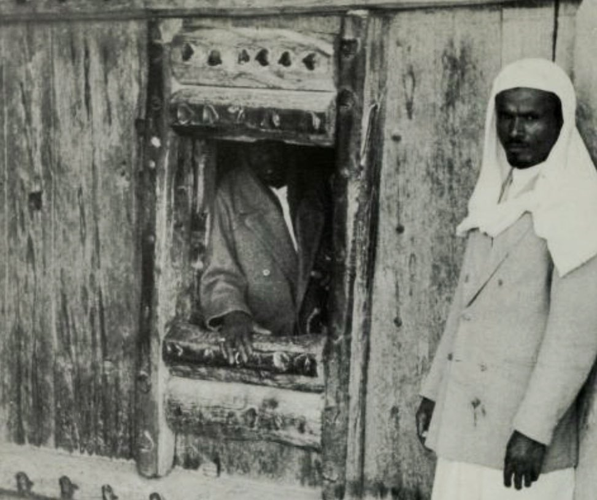

___ __ __________ ________ __ / | / / / ____/ __ \/ ____/ / / / / /| |/ / _____ /___ \/ / / /___ \/ /_/ /__ / ___ / /___ /____/____/ / /_/ /___/ /___ ___/ /_/ |_\____/ /_____/\____/_____/ /_/ .=======================. || /\ /\ /\ /\ || || /__\ /__\ /__\ /__\ || ||=====================|| || | | || || | .=========. | || || | | : | : | | || || | | : | : | | || || | | : (O) : | | || || | | : | : | | || || | | : | : | | || || | |=========| | || || | | : | : | | || || | '=========' | || || | | || ||=====================|| || \/\/ \/\/ \/\/ \/\/ || ||=====================|| '======================='
وش قصة الخوخة؟
يوم طاحت عيني على صورة نجدية قديمة، كنت وقتها ابحث عن افكار للمشاركة بهاكاثون ابشر. من هذي الصورة، بديت اقرا وابحث اكثر عن تفاصيل الخوخة في العمارة النجدية، الين ما جت ببالي فكرة لمشروع امن سيبراني.
الفكرة بالاساس جت من تساؤل كان دايما يجيني: كيف الانظمة الحساسة جدا تترك بعض المنافذ مفتوحة؟ هذا التساؤل هو اللي اخذني ودخلني لعالم الـ SPA Single Packet Authorization.
للاسف، ما تيسرت لي المشاركة في الهاكاثون، لكن الفكرة بقت ببالي وجلست اطورها بيني وبين نفسي الين ما قررت ابدا بتنفيذها فعلياً. بذاك الوقت، كنت توني منضمة لنادي تقنية المستقبل، ووعدت نفسي اني هالترم بستغل الفرصة واشارك بكل مبادرات النادي. وبعد قبولي باسبوع تقريباً، اعلنوا عن مبادرة فيوتشر تالنتس، وهي مبادرة داخلية لاعضاء النادي تسمح لهم يستعرضون مشاريعهم التقنية ويبنون شبكة علاقات.
كانت هذي اول تجربة لي من هالنوع، ووقتها الخوخة كانت لا تزال فكرة ومو اداة مكتملة، لكن توكلت على الله وقررت اسجل كموهوبة واشارك بمشروعي والحمدلله، كانت من افضل القرارات اللي اتخذتها. التجربة كانت استثنائية ويوم لا يُنسى؛ تعرفت على اشخاص رهيبين، وسمحت لي اني اعرّف الناس على نفسي وعلى شغفي بمجال الامن السيبراني. ومن اهم مكاسب مشاركتي بفيوتشر تالنتس هي اني قدرت اخذ اراء وانطباعات الزوار عن الخوخة بشكل مباشر. الفيد باك كان جداً ايجابي ومحفز، وعطوني الزوار افكار عظيمة لكيف ممكن اطور الاداة بشكل اكبر.
حالياً، الخوخة وصلت لمرحلة: [ BETA TESTING ]
من العمارة النجدية للـ Zero Trust

- this is an interactive element, type the answer or press [ i6la3 ] -
المشكلة: ليش سويت هالمشروع؟
كلنا نعرف ان اول واخطر خطوة لاي هجوم سيبراني هي الاستطلاع او الـ Reconnaissance. المخترقين ما يهجمون عشوائياً، هم يستخدمون ادوات فحص زي Nmap عشان يمسحون الشبكة ويدورون ابواب مفتوحة اللي هي الـ Ports. القاعدة عندنا واضحة: Open Port = Target.. اذا فيه بورت مفتوح، السيرفر صار هدف، ومسالة وقت بس ويدخلون منه.
طييييب الحل الواقعي اننا نقفل كل البورتات والسلام عليكم، صح؟ خطا. اذا البورتات مقفلة، مدراء الانظمة ما راح يمديهم يوصلون للنظام.. لازم يخلون منافذ زي الـ SSH Port 22 مفتوحة دايم عشان يتحكمون بسيرفراتهم عن بعد. هنا تجي المشكلة: كيف اخلي الباب موجود لي انا، بس مخفي تماماً عن الهاكر؟
- this is an interactive element, type the answer or press [ i6la3 ] -
الحل: التخفي تحت رادار الـ DPI
يوم عرضت مشروعي، في احد سالني: ليش ما نرسل Packet مشفرة تفتح الباب وخلاص؟
الجواب: هذا هو الحل الموجود الحالي لكن فيه ثغره كبيره حديثة.. الجدران النارية الحديثة او الـ DPI Firewalls ذكية جداً. اول، لو ارسلت باكيت فيه بيانات مشفرة الفايروول ما راح يعرف لان سابقا كانوا فقط يشيكون على الـ packet header وما يدخل الفايروول ويشيك على الـ payload لكن الحين لو ارسلت بيانات مشفرة شكلها غريب، الفايرول بيشوف انها Anomaly ويطيحها على طول. عشان كذا في الخوخة، التخفي هو الحل.
استخدمت اوامر الـ Ping ICMP لان البنق هو نبض الانترنت، ومستحيل الفايرول يمنعه والا بتتعطل الشبكة. هنا ببساطة الخوخة قاعدة تمرر السر حقنا داخل الزحمة الطبيعية للانترنت كانها مرور عادي، عشان العدو ما يفرق بينها وبين البنق العادي.
طيب كيف تشتغل؟
السيرفر حقنا ميت تماماً، ما فيه اي بورت مفتوح يتسمع منه. كتبت Daemon بايثون يتنصت بصمت تام على مستوى الشبكة بيبحث عن البينقات حقاتنا. العملية كلها تصير بـ 4 خطوات سريعة وصامتة:
- LISTEN الصمت: كود البايثون حقي يتنصت على كرت الشبكة مباشرة Layer 2 بصمت تام، بدون ما يفتح اي بورت.
- KNOCK الطرقة: المستخدم يكتب الارقام يدوياً داخل الـ client عشان ما تنحفظ بالـ History وترسل للشبكة.
- TRIGGER التفعيل: السيرفر يلقط التسلسل الصحيح، ويعدل قواعد الفايرول ديناميكياً عشان يفتح منفذ الـ SSH لـ IP المستخدم فقط.
- DISAPPEAR الاختفاء: السيرفر يعطيك 10 ثواني بس تدخل فيها. بعدها؟ تختفي قواعد الفايرول ويقفل الباب تماماً. انت تبقى متصل وتكمل شغلك بشكل امن، بس اي احد يجي وراك بيلقى جدار!.
طيب وشلون السيرفر يعرف ان هالبينق مني انا مو بنق عادي؟ السر في حجم البيانات (Payload Size). النظام يطلب من المستخدم المصرح له ارسال 3 بنقات باحجام محددة بالضبط وبالترتيب، مثلا 72 > 114 > 201. طيب هل ممكن هذي الارقام تجي بالصدفة؟ لو اخذنا بالاعتبار الاحجام الافتراضية للانظمة الويندوز 32 واللينكس 56، وحسبناها رياضياً: $P = 1/65508^3$ الاحتمالية ان جهاز بالانترنت يرسل هذي الاحجام الثلاثة بالترتيب صدفة هي 1 من 281 ترليون! اي - مستحيل الباب يفتح بالغلط.
طيب ليش AL-5054؟
ممكن لاحظتوا اني احيانا اكتب AL-5054 بدل AL-KHOKHA.. طيب ليش؟ جرب وشف!
- this is an interactive element, type the answer or press [ i6la3 ] -
وش الخطوة الجاية؟
المشروع للحين يتطور، ومن اهم الاضافات اللي شغاله عليها:
- اضافة خوارزمية TOTP Time-Based One-Time Password.
- توليد احجام بيانات متغيرة Dynamic Packet Sizing تتغير كل 30 ثانية.
- حماية كاملة ضد هجمات اعادة الارسال Replay Attacks.
في النهاية، القاعدة في الامن السيبراني تقول:
اللي ما ينشاف، ما يُخترق. You cannot hack what you cannot see.
المشروع حالياً في مرحلة الـ Closed Beta للـ Testing.
اذا ودك تختبر امان الاداة وتساعدني بتطوير الخوخة، تقدر تتواصل معي وتسجل اسمك في قائمة الـ Beta Testers <٤
FOR MORE INFO OR TO REQUEST TO JOIN AL-KHOKHA'S BETA TESTERS, CLICK [ HERE ]